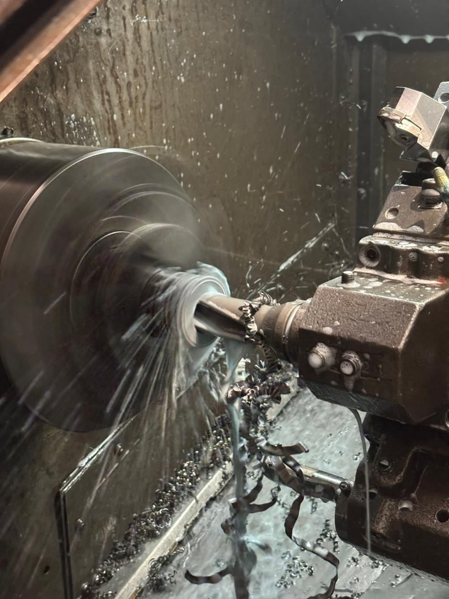
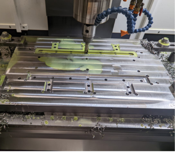
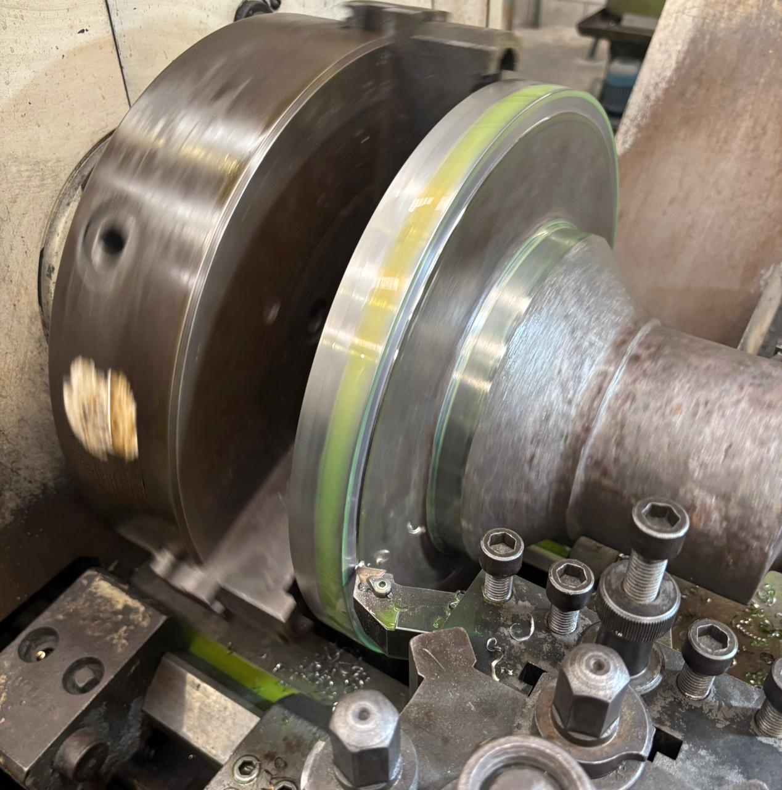
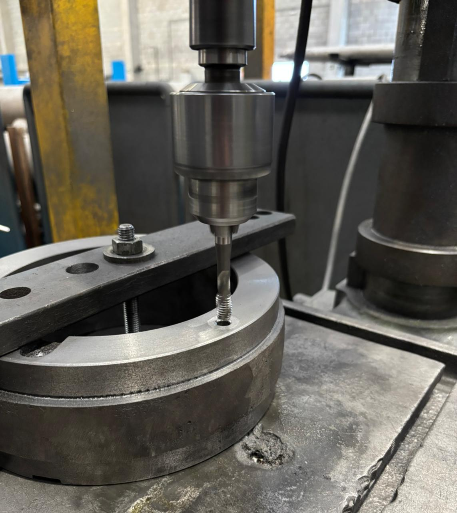

Capacidade Técnica e Maquinário Industrial
Nossa oficina mecânica possui recursos mecânicos preparados para atender usinagens pesadas e leves, assegurando repetibilidade e agilidade na entrega.

Torneamento CNC

Centro de Usinagem CNC

Torneamento Mecânico

Furadeira de Bancada